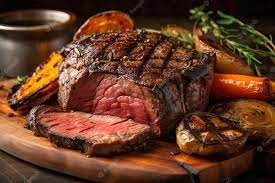
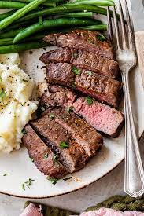

Steak Recipe
A steak is a thick cut of meat generally sliced across the muscle fibers, sometimes including a bone. It is normally grilled or fried. Steak can be diced, cooked in sauce, such as in steak and kidney pie, or minced and formed into patties, such as hamburgers.


Ingredients:
- 2 steaks (e.g., ribeye, sirloin, or filet mignon)
- 2 tablespoons of olive oil
- 2 cloves of garlic, minced
- 1 teaspoon of salt
- 1/2 teaspoon of black pepper
- 1/2 teaspoon of dried rosemary
- 1/2 teaspoon of dried thyme
Instructions:
- Remove the steaks from the refrigerator and let them sit at room temperature for about 30 minutes before cooking.
- Preheat your grill or pan to high heat.
- Brush both sides of the steaks with olive oil and season them with minced garlic, salt, black pepper, rosemary, and thyme.
- Place the steaks on the hot grill or pan and sear them for about 3-4 minutes per side for medium-rare (adjust the cooking time to your desired level of doneness).
- Remove the steaks from the heat and let them rest for a few minutes before slicing.
- Slice the steaks and serve hot.